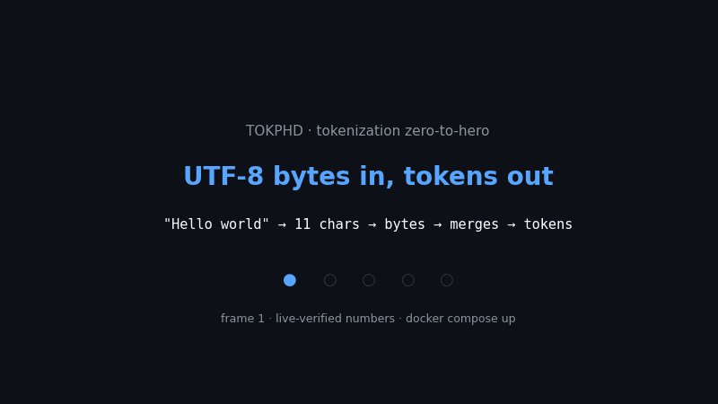
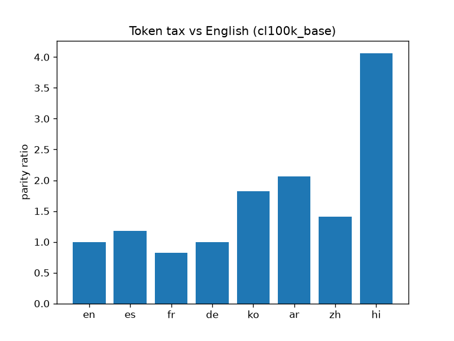
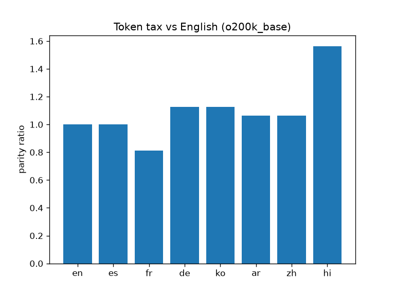

Tokenization Zero-to-Hero
CEO summary in 30 seconds: every LLM bill, context limit, and half of all “weird AI mistakes” come from one invisible step — the tokenizer. This repo rebuilds it from zero (bytes → BPE → GPT-2/GPT-4 rules), proves each famous quirk on live public data, and hands you a one-command benchmark plus a new discovery (fertility tracks merge-failure rate, r = 0.72). If you read only the Beginner guide below, you will know more than most interview candidates.

🌱 Start the Beginner guide 🎯 Skip to the quiz 🔬 Try the playground
docker compose up --build # reproduces every number below # or: make setup && make test && make bench
🌱 Beginner guide — read this and you are a professional
“Let's work this out in a step-by-step way to be sure we have the right answer.” That is the whole method of this repo: never believe a claim — run it.
Hello must become numbers before any AI can read it. Those numbers are called tokens.H e l l o → [72,101,108,108,111]. Works for English, explodes for Korean/emoji (150,000+ characters and growing).e + space occurred 20×), mint a new token 256, replace everywhere, repeat. 20 merges ≈ 1.27× shorter. 50,000 merges ≈ GPT-2. 100,000 ≈ GPT-4.dog | . | dog | !). That is why dog. never becomes one token — and why 4 spaces in Python broke GPT-2 but not GPT-4.<|endoftext|> separates documents; chat models add <|im_start|>/<|im_end|> per message. They are swapped in by exact match — which is also why pasting them can confuse a bot.🔬 Playground — feel tokenization (no install)
Type anything. This mini-demo mimics the repo's pre-tokenizer: it chunks letters / numbers / spaces / punctuation separately — merges never cross chunks.
🎯 Quiz — from scratch to pro (with step-by-step answers)
📊 Results — every number below was executed, not quoted
pytest tests/ -q| Claim | Live evidence | Run it |
|---|---|---|
| Arithmetic splits arbitrarily | 127→[18112] single · 677→[718,3324] · 804→[807,3023] | exp03_arithmetic.py |
| 4 spaces waste | GPT-2 [220×4] vs cl100k 1 tok | exp04_code_whitespace.py |
| Multilingual tax + fix | hi 6.18×/4.06×/1.56× · ko 4.41×/1.82×/1.12× | exp05_multilingual_tax.py |
| Trailing space shifts distribution | […,6128] → […,6128,220] | exp06_special_trailing.py |
| Glitch candidates | 8,629/50,257 rows fire on 1MB; bytes 94–100 → � | exp07_glitch.py |
| YAML cheaper | saves 12.1% / 15.6% / 15.6% | exp08_json_yaml.py |


✨ Features & user stories — what you can do with this repo
🎓 Learn tokenization properly
Beginner guide + playground + quiz take you from “what is a token” to reading merge tables. Perfect for interviews and courses.💰 Cut your LLM bill
Measure bytes/token and parity on your prompts; pick YAML over JSON, o200k over cl100k, pre-translate when the tax is >2×.🌍 Ship fair multilingual products
Quantify the non-English tax per language before launch; prove the fix with the same harness.🐍 Debug “model” bugs that are tokenizer bugs
Arithmetic, spelling, code-indent, trailing-space warnings — reproduce each in one file each.🛡️ Audit glitch-token risk
Scan any vocabulary for never-firing / invalid-UTF8 tokens before they reach production prompts.📝 Publish with confidence
Every figure links to a SHA-pinned live corpus + one Docker command. Reviewers can regenerate everything.🌐 View as a website (GitHub Pages — 2 minutes)
This page you are reading is the website. To publish it for your repo:
- Push this repo to GitHub (keep the
docs/folder as-is). - Open Settings → Pages.
- Under Build and deployment → Source choose Deploy from a branch.
- Branch: main (or master), folder: /docs → Save.
- Wait ~1 minute, then open
https://<you>.github.io/<repo>/preview.html.
Why /docs? GitHub Pages serves static files directly — no build step. docs/preview.html, docs/demo.gif, and docs/figures/ are all relative-linked, so they work both locally (open docs/preview.html) and on Pages. No action or custom domain required.
❓ FAQ (the questions everyone asks)
Do I need a GPU or API key?
No. Everything runs on CPU with live public text. No keys, no weights, no cost.How long does the full benchmark take?
~2–5 minutes on a laptop (trains a 2000-token BPE on 200KB + evaluates 5 tokenizers × 4 corpora).Why do numbers differ slightly run to run?
Live pages drift; each run records URL + UTC time + SHA-256 inresults/summary.json. Pin data/live/manifest.json for byte-identical reruns.Can I use this in a course / interview prep?
Yes — start at the Beginner guide, play, take the quiz, then openexperiments/ in order. Each file is one claim, one page.Where is the “paper”?
README.md is the full study; paper/PAPER.md is the 8-page draft skeleton wired to results/summary.json.🚀 Quick start (copy-paste, 60 seconds)
docker compose up --build # results/summary.json + results/figures/parity_*.png appear # no docker? make setup && make test && make bench